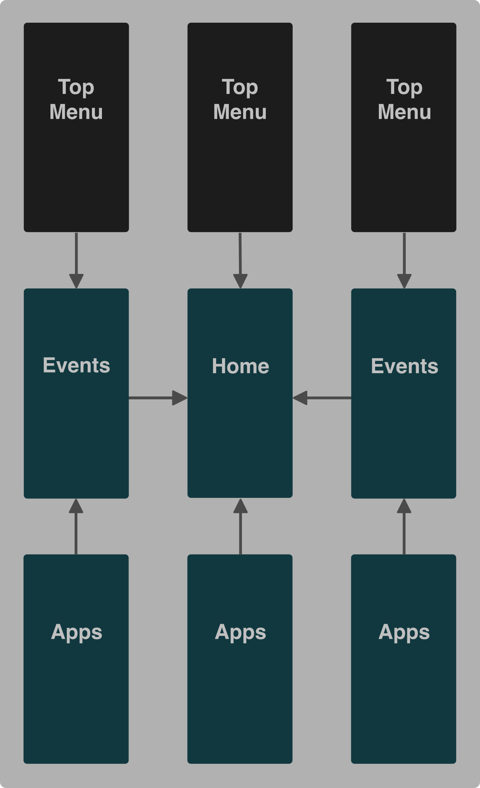
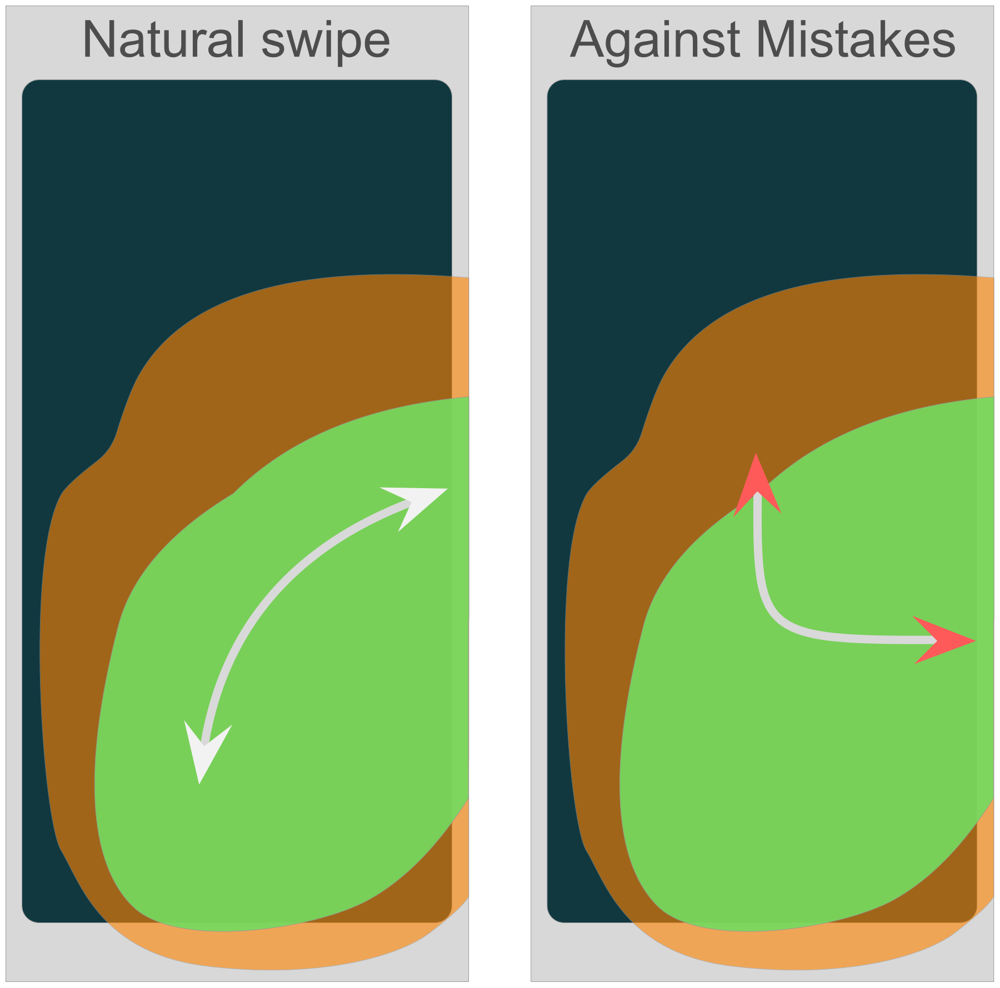
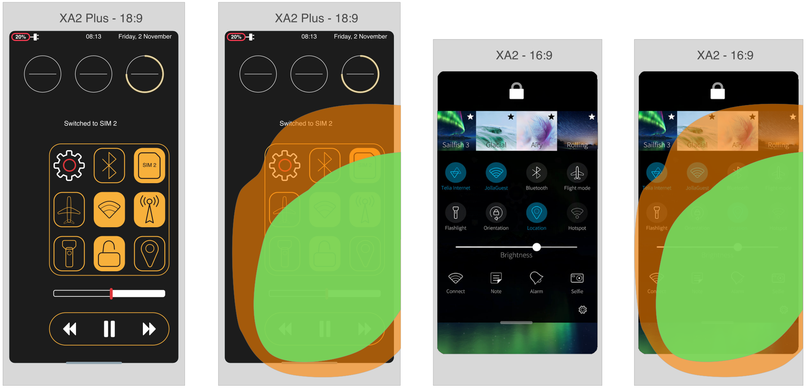

Sailfish OS: UX Case Study
As with most case studies, the idea is to explore the current state of a particular area and make some propositions about improving it.
And the area of this case study is the UX of Sailfish OS(which is already pretty good). Of course, the proposed ideas shouldn't be too harsh and drive away the current users.
First, let's talk context. We have to deal with multiple contexts. So let's find the borders/limitations we have to work with.
1. Hardware Limitations
Now let's start with what we know. Jolla are not making hardware anymore, so they don't have much control here. Taking this is consideration and moving on with the currently supported devices.
Mobile Phones: - Jolla (4.5 inch, 16:9 ratio) - Jolla C (5.0 inch, 16:9 ratio) - Sony Xperia X (5.0 inch, 16:9 ratio) - Sony XA2 (5.2 inch, 16:9 ratio) - Sony XA2 Ultra (6.0 inch, 16:9 ratio) - Sony XA2 Plus (6.0 inch, 18:9 ratio) Tablets: - Jolla Tablet (7.85inch, 4:3 ratio)
Based on the screen sizes we can limit the scope a bit. Phone makers are probably going to stay with the current trend of bigger screens for some time. (Possibly the upcoming folding phones will disrupt this trend).
In the context of hardware, the differences are mostly dimensional. Sadly, different and more innovative types of hardware for interacting with the devices are hard to find. So let’s focus just on the screen dimensions for now.
Let's take the current line of phones in the eco-system to find potential weak points.
Current device line

Since not having a proper crowdsourcing I will be using screenshots (from review videos) of `one-handed use` of actual people interacting with the various version and not just posing for picture with the product. We can see the following:
With the this information (which to be honest is not much, but still something) we can start analyzing:
- XA2: Keeping your pinky on the bottom lip of the phone still gives enough grip and the phone can be used for somewhat normal operation. Top of the screen is unreachable. The opposite horizontal edge is unreachable. - XA2 Plus: Users hold the phone more to the middle. Most possible explanation is weight balance, otherwise there would not be enough grip. Bottom of the screen is harder to reach(more on that later). Top of the screen is unreachable. The opposite horizontal edge is unreachable. - XA2 Ultra: The same as XA2 Plus.
So we can see the most common weak point these days:
Reachability - in all versions of the XA2
Check the weak points against Sailfish OS 3:
Other issues can mainly come from the size of the device and not the OS itself.
Thinking about worst case scenario, I tried to make a heatmap of the reachability situation on the XA2 Plus.
Now, I will excuse myself again. This was done within limited time. And without proper crowdsourcing this shouldn't be taken seriously. Based on my hand size(considering myself having normal hand size).
Green Area - the reachable part of the screen Orange Area - the trickier to reach part of the screen Red Area - unreachable
2. Software Limitations
Again, let's start with what we already have and then see if something can be proposed.
Sailfish is using gesture based navigation. And in it's current state it looks like this:

Let's examine the navigation screens which may have reachability issues.
1. Home: With just 2 App Covers on a row there will be no problem. But with 3 App Covers on a row it may get tricky to hit App Covers in the opposite edges on the Top of the screen. 2. Events Since the Top part is used as a Presentational component with no controls, everything is perfect. 3. Apps App Icons on the Top may not be reachable. 4. Top Menu Some of the Quick Toggles on the Top may not be reachable.
3. Propositions
Some propositions will be given to improve the current Navigation.
Let's start with the Quick Close.
Quick Close
Currently the Quick Close is triggered with a swipe down from the Left/Right part of the Top edge. Since the Top edge of the screen is hardly reachable(especially on the XA2 Plus and Ultra), this is an area which can be improved. The problem is where to move this action and how it will be triggered.
Where - it needs to go lower. This leaves us with the Left, Right, Bottom edge to initiate it. The Left and Right edges give us best reachability regardless of the way the phone is held. So lets try from the Left and Right edges.
How (it will be triggered?) - The Left and Right edges edges are used for Navigation between Home and Events and also to minimize Apps. So we will need new gesture. Something without adding too much complexity and preventing accidental closing. So, let's check the natural swipe direction and go from there. The natural direction of a swipe from the edge is sideways and going down. So if the opposite direction is used for Quick Closing an App, this will prevent from accidental closing. Let's check it.

And here it is a more complete overview, with a hint at the top of the screen, telling the user what is going to happen.
Now the Top Edge is decluttered.
Which lead us to the Top Menu.
Top Menu
What can be done here? The Top Menu can be accessed from three places - from Home, Events, In-App. What about "one-handed" usage. What if the swipe direction from Home to Events is stored and used for rearanging the Top Menu in a more compact form. A demonstration will clear things out.
Left Swipe

From Home

Right Swipe

This is not the about the UI (colors, icon shapes. etc), but more about the UX, so here is a little comparison of the proposed vs the old:

Landscape
And the Presentational Component from the Events Screen can be leveraged, leaving the Top part of the screen just for infomartion/metrics:
- onChange Notifications for the Quick Toggles (ON/OFF) - Available Memory - Media player information - Temperature
The final proposition is about a feature which will be nice to have.
System Search
Triggered only from the Home Screen and Events.
Two 'paddles' will apear on Swipe Down + Hold. From there the swipe will be continued to either Left or Right.

View from above of the proposed navigation improvements:
App Drawer
The App Drawer will be hard to improve without reducing the interactive area. Leaving it as it is, for now.